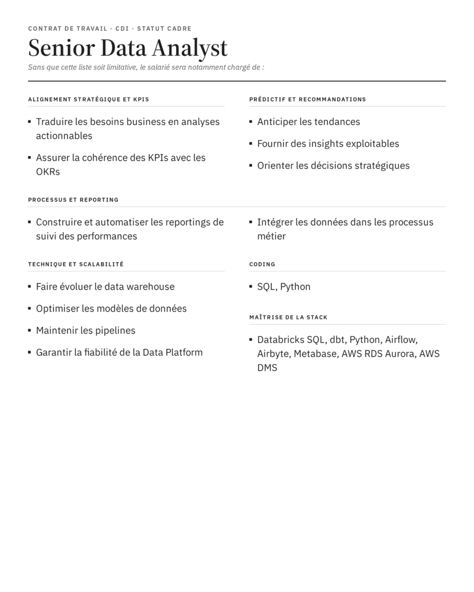
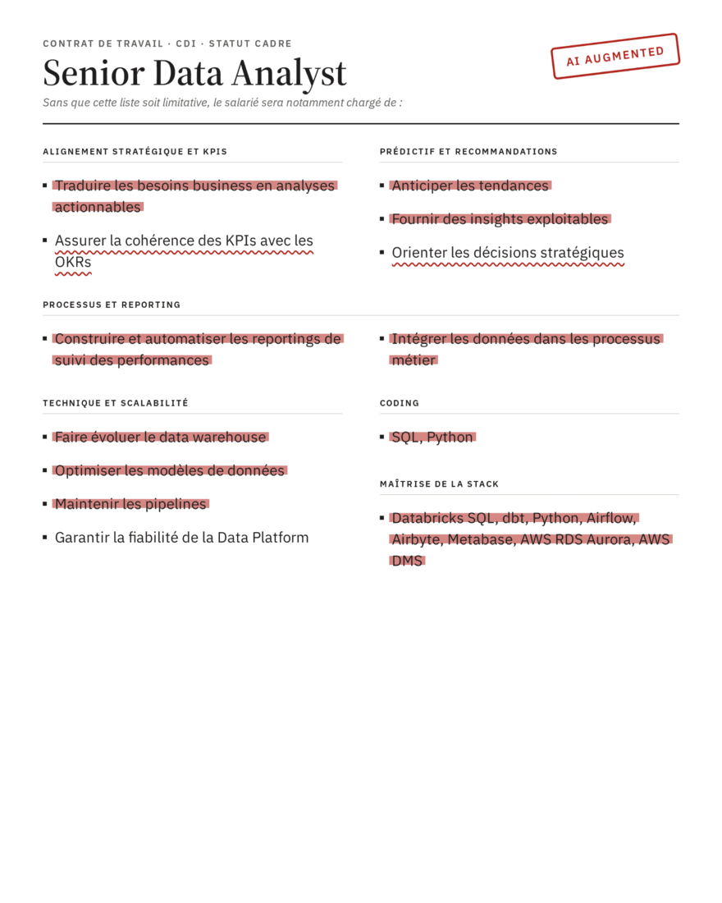
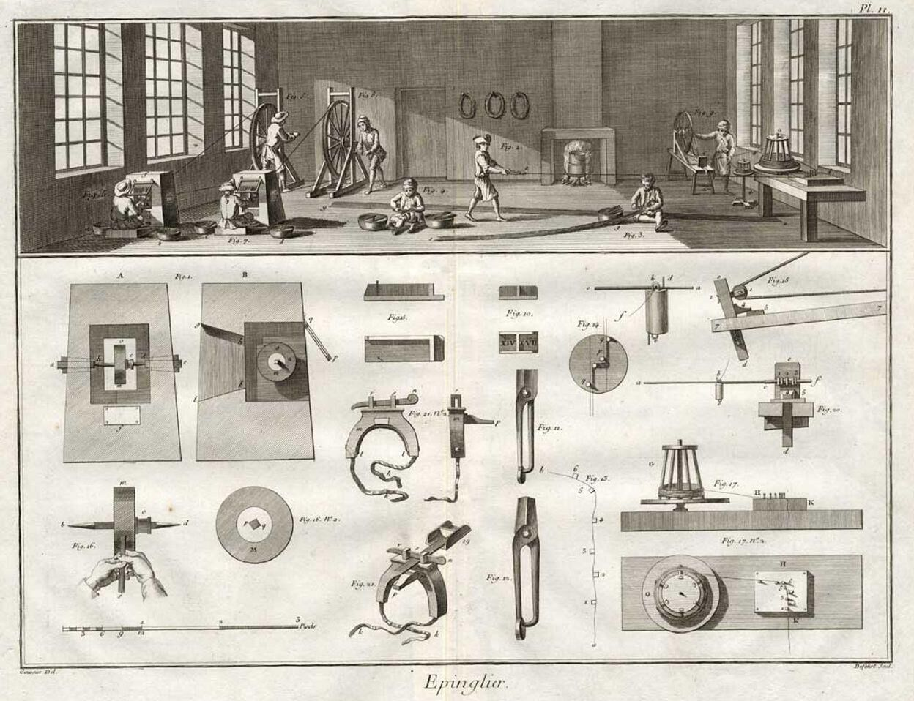

L'IA rendra votre organisation obsolète. Si vous en avez une.
Forward Data Conference 2026 · Grand format
L'IA rendra votre organisation obsolète. Si vous en avez une.
Pendant vingt mois, j'ai déployé la même stratégie agentique dans deux organisations que tout sépare, et j'ai obtenu deux résultats complètement opposés.
Par Alexis Blandin · 20 min de lecture
Faites défiler
Ce texte reprend la conférence « AI will make your organization obsolete. If you have one. », donnée le 16 novembre 2026 à la Forward Data Conference.
Connaissez-vous ce tableau ? Le sujet, vous l'avez peut-être reconnu, c'est le Baptême du Christ. Il date de 1475, en pleine Renaissance italienne, et c'est l'œuvre d'un certain Andrea del Verrocchio, qui était à la fois peintre, sculpteur et orfèvre. Ce tableau est entré dans la légende à cause d'un détail, j'y viens.
Il faut d'abord se rappeler qu'à l'époque, l'artiste n'est pas celui qu'on imagine aujourd'hui. C'est plutôt un artisan, qui travaille dans ce qu'on appelle une bottega, un atelier dans lequel tout le monde fait à peu près tout. On y entrait enfant, et on y apprenait tout, broyer les pigments, dessiner, sculpter et peindre. Quand une commande arrivait, le maître répartissait le travail, l'un faisait le fond, l'autre les bâtiments, et ainsi de suite.
Un atelier de peinture à l'huile vers 1600, gravé d'après Jan van der Straet pour la série Nova Reperta. Chacun tient son poste, mais tous travaillent dans la même pièce.
Le détail dont je vous parlais, c'est cet ange, sur la gauche. La légende dit que Verrocchio l'aurait confié à son jeune apprenti, et que l'exécution en était si parfaite que le maître aurait posé son pinceau et renoncé à peindre. Vous l'avez peut-être reconnu rien qu'au style. Cet élève, vous le connaissez tous, c'est Léonard de Vinci.
L'ange de gauche, attribué au jeune Léonard.
Cette histoire me rappelle ce qu'on entend depuis maintenant dix-huit ou vingt mois. Nos agents sont devenus des génies, et nous connaissons tous des ingénieurs qui arrêtent de coder, écrasés par leur Léonard à eux. Peut-être avez-vous déjà rencontré le vôtre. Mais cette histoire de Renaissance cache autre chose, et j'y reviendrai à la fin.
Je m'appelle Alexis. Ces vingt derniers mois, j'ai eu la chance de piloter la data de deux organisations que vraiment tout sépare. Jolimoi est une beauty tech parisienne, et Urban Sketchers une ONG américaine présente sur les cinq continents, qui promeut le dessin. Dans les deux, j'ai eu l'honneur de déployer, avec la même carte blanche, quasiment la même stratégie agentique, avec les mêmes outils, et j'ai obtenu deux résultats complètement opposés.
Ce sont deux organisations de petite taille, et je n'en tire aucune généralité. Des erreurs, nous en avons fait, ce qui ne vous étonnera pas vu la jeunesse de l'IA agentique. Je veux simplement vous raconter, avec ces deux casquettes, ce que j'ai observé sur le terrain.
Je me suis concentré sur l'organisation du travail, et organisation ne veut pas dire entreprise. Une organisation du travail, ce sont des êtres humains réunis pour un objectif commun, avec des règles, des prescriptions, des procédures et des processus qui servent à structurer, définir, répartir et coordonner. C'est son obsolescence à l'ère agentique qui m'intéresse.
Premier domino
L'adoption
De sept à deux.
Je commence par ce qui s'est passé chez Jolimoi, une cascade d'événements, comme des dominos. C'est l'histoire d'une société qui a connu une contraction économique très forte, et vous y trouverez sans doute des choses familières.
Pour moi, la première phase est celle de l'adoption, et elle commence avant même les agents. Au pic, Jolimoi comptait à peu près une centaine de salariés, et nous étions une équipe data de sept, avec une expertise très bien segmentée. Puis il nous est arrivé ce qui arrive à beaucoup d'entreprises, une contraction économique terrible, par étapes. À partir de l'été 2025, les départs n'ont plus été remplacés, et nous sommes passés de sept à deux. Nous sommes toujours deux.
À ce moment-là, l'IA, nous l'avons accueillie à bras ouverts. Les LLM d'abord, puis les premiers agents capables de faire du bash et de la recherche, nous ont bien aidés, et les premières tâches automatisées ont compensé les départs, au point que nous arrivions à faire la même chose à deux. Il faut le dire, ça marche, et ça a été au-delà de nos attentes. L'IA peut remplacer des personnes. Mais à ce stade, nous le faisions un peu pour nous, un peu égoïstement, pour absorber l'intégralité du travail qui nous incombait.
Deuxième domino
L'accélération
Faire coûte moins cher que planifier.
La deuxième phase, celle de l'accélération, est plus intéressante, parce que nous avons commencé à avoir du temps libre. À mesure que nous faisions monter la qualité des agents, l'amélioration était continue, de mois en mois, et c'était trop tentant pour s'arrêter. Quand une organisation n'est pas organisée pour absorber tout ce gain de temps, elle fait ce qu'elle sait faire, elle va beaucoup plus vite. Nous, qui avions l'habitude de dire non, avons commencé à prendre de plus en plus de sujets, et toutes ces tâches que nous n'avions jamais eu le temps de faire, jusqu'à notre bon vieux backlog.
Tickets dans le backlog
1 000
environpoussés de sprint en sprint
Nous avions un vieux backlog que nous poussions depuis des années. Nous piochions dedans de sprint en sprint, mais il grossissait à vue d'œil, plein de doublons, de triplons et de sujets jamais faits.
Nous nous en sommes emparés sur une période un peu plus creuse, après le Black Friday et juste avant Noël, un peu comme un jeu.
C'était une tâche inhumaine, et nous l'avons réduit à zéro en quelques semaines. Pour nous, ça a été un vrai jalon, mais au niveau de l'organisation, ça ne se voyait pas tellement.
Le deuxième effet, c'est que nous allions trop vite pour nos propres pratiques, des pratiques pourtant saines, qui n'avaient jamais posé problème.
Nos pratiques d'équipe
Release notes hebdomadaires
Spécifications détaillées
Code reviews manuelles
Story points
Sprint de deux semaines
Planning
Faire coûte moins cher que planifier.
Nous avons arrêté les release notes à nos utilisateurs, que nous faisions religieusement une fois par semaine, parce que le rythme était devenu complètement délirant.
Pour les spécifications détaillées, nous nous sommes rendu compte que les agents les faisaient de manière beaucoup plus efficace. Les code reviews manuelles, nous avons arrêté de les faire.
Nous avons contracté les sprints de deux semaines et complètement supprimé le planning. Le temps se contractait et le décorum se délitait, et avec l'accélération, nous n'avions jamais le temps de remettre l'organisation en question.
Tout le décorum tombe, et il faut comprendre et admettre que faire coûte moins cher que planifier.
Une fois qu'on avait une idée, plutôt que de la spécifier, on y allait et on livrait. Au lieu de spécifier à rallonge, nous nous amusions à faire deux, trois, quatre ou cinq fois le même sujet, parfois avec plusieurs personnes, juste pour voir ce que ça pouvait donner, y compris avec des personnes qui n'avaient pas forcément les connaissances. Et ça marche, c'est ça le pire. À la fin, il reste une note d'intention, l'équivalent d'un post-it.
Le goulot d'étranglement s'est alors déplacé. Côté production, il n'y avait plus aucun problème, mais quand vous produisez plus, le problème devient l'ingestion. Le goulot passe de l'analyse à la relecture, puis aux métiers, qui ne suivent plus, et il remonte les strates de l'organisation telle que nous l'avions mise en place.
Ça a aussi un impact sur les personnes. Dans ce train effréné, on ne s'arrêtait jamais, et c'était encore nous, humains, qui faisions l'interface avec les agents pour les faire avancer. Vous connaissez la fameuse image de la machine à sous. On relance, on relance, c'est addictif, il reste toujours un dernier truc à réaliser, et l'agent ne se fatigue jamais. Nous ne voulions pas freiner la vélocité, c'était épuisant pour l'organisation puis pour les personnes à l'intérieur, et nous en avons été les premières victimes. Je pense que nous nous sommes enfermés nous-mêmes, alors je vous pose la question : qu'est-ce que vous faites, vous, quand vos agents travaillent pour vous ?
Nous commencions à couvrir l'intégralité du besoin de l'entreprise, voire au-delà, mais nous étions encore un peu en sous-marin, et ça ne se voyait pas des masses. Il fallait un déclic pour que cet impact soit pris en compte, et l'histoire est assez simple.
Un après-midi de janvier
14h20→14h30
Deux analyses complexes demandées en réunion.
Début janvier, à 14h20, notre CTPO nous demande en réunion deux analyses complexes, j'insiste, de quelques dizaines à près d'une centaine de requêtes. Avec nos étapes de fact-checking et de validation, elles auraient pris des heures, voire plusieurs journées.
Quand il sort de réunion, à 14h30, le système les a déjà livrées, vérifiées et challengées, avocat du diable compris. C'était toute une insight factory, pensée pour répondre à ce type de questions.
Ça a été une claque. Il savait ce que les agents pouvaient fournir pour le code, mais là, il a réalisé ce qu'ils permettaient pour l'analyse, et il a vite compris que le goulot allait devenir un problème, ou une opportunité.
Troisième domino
La distribution
Distribuer le geste du data analyst.
On arrive au troisième domino, la distribution. Jusque-là, le gain était personnel et cantonné aux équipes techniques, et la contraction continuait, très dure en effectif, puisque nous n'étions plus qu'une trentaine dans la boîte. Après le déclic, la question est devenue la suivante : peut-on donner cette capacité, avec cette qualité, à tout le monde ?
Nous avons décidé, d'un commun accord, de déployer à toute l'entreprise, avec une idée, distribuer le geste. Pour reprendre l'analogie avec la peinture, c'était le geste du data analyst, et il s'agissait de donner à tout le monde la capacité d'être analyste. Quand nous avons commencé, ça a tout de suite fonctionné.
La première chose que ça a produite, c'est une dérive réelle dans la manière dont les gens communiquaient avec nous. Avant, chaque analyse passait par nous, et désormais chacun faisait la sienne. Le taux de consultation de la BI a drastiquement baissé, et ça s'est confirmé jusqu'à aujourd'hui. Le canal Slack où l'on nous pinguait est devenu atone, les analyses se sont raréfiées, comme les projets Notion où l'on nous notifiait. Ça a été vraiment brutal. La self-BI, le graal de tout head of data, nous l'avions sous les yeux, réalisée, et nous nous étions complètement effacés de l'équation.
Est-ce vraiment un graal ? Nous l'avons atteint, mais il avait un prix, celui de la dépossession. En donnant le geste au métier, nous avons perdu une partie de notre valeur ajoutée, et pour certains une certaine fierté, pendant qu'eux sortaient augmentés d'une compétence que nous leur avions donnée. Le sachant n'était plus le sachant, et nous vivions une petite crise de l'ordre établi.


Regardons ce que ça fait côté people, avec la fiche de poste d'un senior data analyst, telle qu'elle avait été signée. Je la résume, elle ressemble sans doute à la vôtre. Qui, parmi vous, a relu et modifié ses fiches de poste depuis 2025 ? J'imagine que pas grand monde.
Après l'accélération, voilà ce qui est rayé. Je fais les rayures moi-même, mais tout cela s'est fait de manière progressive.
Après la distribution, produire des analyses est rayé, et même les valider. Assurer la cohérence des KPI avec les stakeholders ou orienter les décisions stratégiques, même ça se partage, d'où le surlignement. Il reste, au bout du compte, garantir la fiabilité de la data platform, et nous nous sommes demandé si c'était vraiment le rôle d'un analyste.
À côté de ça, un nouveau collègue est arrivé, une doublure agentique, l'AI Data Analyst. Il ne se fatigue pas, il reste toujours efficace, et il commence à prendre du poids.
Pire, toutes les personnes à qui nous avons distribué ce geste profitent de ce nouveau collègue. J'ai pris le CFO, mais ça pourrait être n'importe qui, je ne vise personne. Lui a l'impression que sa fiche grandit, alors que nous devenons de plus en plus petits.
C'est même cumulatif, du CFO au CRM et au customer success, du stagiaire au head of CRM, jusqu'à la personne du customer success qui ne vous appelle plus parce qu'elle est devenue data analyst. Nous étions toujours au bureau et nous discutions avec les gens, mais on venait moins nous voir. La fiche se réduisait, notre importance aussi, et le métier dérivait complètement.
Un nouveau point de bascule est alors arrivé, celui de la crise de conscience. Le prix, malheureusement, ce sont des épisodes de fatigue professionnelle et des congés pris en urgence, à la limite de l'arrêt maladie. Les membres de l'équipe commençaient à douter d'eux-mêmes, et il y a eu cette phrase, entendue dans mon équipe.
« Mon métier, c'est de faire de l'analyse, pas de passer mon temps à gérer des agents. »
Ce qu'elle décrit, c'est ce qu'on appelle aujourd'hui le context engineering, mais à l'époque, nous ne parlions pas encore de contexte. Cette phrase a été le déclic qui nous a fait passer à l'étape suivante.
Quatrième domino
La colonisation
Chacun sa doublure.
Pour régler ça, sans que ce soit forcément volontaire, nous sommes entrés dans une autre phase, celle de la colonisation. Les personnes qui avaient vu ce que ça donnait d'être augmentées comme nous l'avions fait ont voulu la même chose sur leur propre métier, pour déléguer, pour en faire encore plus, et pour ne pas devenir le bottleneck à l'échelle de la boîte. La même logique a gagné toute l'entreprise. Les gestes de chaque métier ont été encodés, agentifiés et distribués à tous, et la dépossession est devenue générale, mais au moins, on joue à armes égales.
Donner son savoir, c'est aussi perdre le pouvoir qui allait avec, et chaque métier a désormais sa doublure. Moi, data analyst, je récupère des gestes du CFO, et le CFO récupère l'agent du data analyst. Qu'est-ce qui a le plus de valeur, alors ? Est-ce un data analyst qui a la main sur le harness et sur le contexte, et qui gagne les compétences du CFO, ou un CFO qui gagne des compétences de data analyst sans avoir la main sur le contexte ? On se retrouve face à un C-level qui joue quasiment à armes égales, expérience mise à part. Ceux qui se cachaient derrière un titre se voient challengés, parfois jusqu'à la hiérarchie, et ça nous est arrivé.
Les doublures de la finance, des sales, du produit et du marketing. À la fin, il y a plus de fiches d'agents que de fiches humaines.
À un moment, on réalise qu'il y a plus de tâches sur les fiches des agents que sur les fiches humaines, en tout cas en volume. On croit à un transfert de compétences, mais ça cache autre chose, une perte de compétences, une vraie déqualification, ce qu'on appelle le skill rot. On bascule énormément de choses de l'individu vers le système, avec des problèmes de confiance et de rétention d'information, un sujet dans le sujet.
Le dernier point sur Jolimoi est un cas que je répète à l'envi, celui d'un mauvais dénominateur. On nous demande une analyse, à partir d'une intention claire. Elle est réalisée par un agent, qui prend le mauvais dénominateur, le chiffre d'affaires global au lieu du chiffre d'affaires commissionnable. L'analyse est répétée plusieurs fois, présentée au board, et l'effet de bord amène une mauvaise décision stratégique.
La question à se poser, c'est qui est coupable. Parle-t-on du modèle choisi, du prompt, du harness, de l'analyste qui a encodé son geste, de celui qui a posé la question ou de celui qui a configuré l'agent ? Ça ne peut pas être l'agent, parce qu'un agent ne signe rien et ne répond de rien. C'est vraiment, je pense, le sujet, la responsabilité, et j'y reviens plus loin.
Deuxième histoire
Urban Sketchers
Il ne s'est rien passé.
Je vous avais promis une deuxième histoire, beaucoup plus courte. Urban Sketchers est une association à but non lucratif d'à peu près une centaine de bénévoles, présente dans 500 villes sur tous les continents, avec des millions de pratiquants. Nous travaillons tous plus ou moins en asynchrone, et nous y avons déployé la même stratégie que chez Jolimoi, sur le même laps de temps.
Dans une organisation comme celle-ci, il y a un manifeste, et c'est la mission. Celle d'Urban Sketchers est de promouvoir le dessin in situ, le dessin sur le vif, et le manifeste n'a jamais changé depuis le début. Chacun est concentré sur cette mission, alors que dans une entreprise classique, les équipes se tirent souvent un peu la bourre. Même une entreprise à mission ne joue pas à la même échelle.
Le manifeste d'Urban Sketchers, inchangé depuis le début.
Il y a très peu de rituels et de procédures, ni sprint ni backlog. Il y a des titres, mais rien à défendre, ni territoire, ni budget, ni ego, parce que la mission est plus grosse que chacun.
Et puis le bénévolat est un don de temps. Dans une entreprise, quand vous compressez votre temps, vous le rendez toujours au travail. Un bénévole veut en donner le moins possible au fonctionnement, et préfère passer ce temps sur la mission ou avec sa famille. Au lieu de compresser le temps, l'IA le libère. L'onboarding des chapters, par exemple, reposait sur une seule personne, devenue goulot malgré elle, et nous l'avons entièrement automatisé pour rendre ce temps à la mission.
Je vais peut-être vous décevoir, mais chez Urban Sketchers, il ne s'est rien passé. Tout a été accueilli à bras ouverts, sans aucune friction, et rien de structurel n'a bougé, parce que tout le monde y fait tout, comme dans un petit atelier, la bottega dont je parlais au début. Il n'y avait rien à dissoudre.
Alors, qu'est-ce qu'on retient de tout ça ?
Ce que les agents ont emporté
Travail → système
Rituels → système
Savoir → système
Postes → responsabilités ?
Le travail rentre dans le système, et les rituels rentrent dans le système.
Le savoir rentre aussi dans le système, toutes ces tâches cognitives routinières qu'on peut encoder, jusqu'à la table à utiliser quand on analyse tel domaine.
En bref, qu'est-ce qu'il reste ? Des responsabilités. Les agents ont une capacité de raisonnement, ils peuvent prendre des décisions, et il faut savoir qui est responsable de quoi.
On est en train de faire aux cols blancs ce qu'on a fait aux cols bleus, et la question de la suite, on peut peut-être la retrouver dans ce qu'on a déjà vécu, il y a très longtemps.

Retour en arrière
La division du travail
De l'épinglerie au bureau des méthodes.
Faisons un petit rappel d'histoire, très rapide. Cette planche de l'Encyclopédie de Diderot et d'Alembert, vous la connaissez peut-être. Adam Smith la prend en exemple de la division du travail dans La Richesse des nations, en 1776, et on y voit dix ouvriers se partager dix-huit opérations. J'en avais tiré un premier billet, mais le chiffre mérite qu'on s'y arrête.
Épingles par ouvrier et par jour
20
un ouvrier seul, de bout en bout
Un seul ouvrier, holistique, qui fait tout de bout en bout, produit une vingtaine d'épingles par jour.
Avec dix ouvriers spécialisés, on passe à 4 800 épingles par ouvrier. C'est un bond de productivité incroyable, du moment qu'on passe de l'ouvrier généraliste au spécialisé, et ça se faisait sans machine.
La division du travail, on n'en est jamais sorti, et les fiches de poste que je vous ai montrées en sont l'héritage direct.
Les usines à agents, ces dark factories et ces insight factories où des agents travaillent et collaborent entre eux, permettent aujourd'hui aux cols blancs d'avoir la même capacité sur le cognitif, sans avoir besoin d'une machine-outil.
On ne peut pas non plus parler d'Adam Smith sans évoquer Taylor. En 1911, Frederick Winslow Taylor a une idée incroyable, séparer le faire du penser. Maintenant qu'on a des spécialistes, on leur dit d'arrêter de réfléchir et de suivre la méthode, et on crée le bureau des méthodes, qui optimise les façons de faire pour augmenter encore la productivité.
Frederick Winslow Taylor, qui a séparé le penser du faire.
Les machines ont ensuite pris le faire. Ce qui est intéressant, c'est que dans les métiers de cols blancs, on le fait depuis longtemps, avec des machines à états ou des solutions algorithmiques. Ce qui bloquait, c'était le penser, parce que les machines ne savent pas penser, et c'est le problème des cols blancs. Alors, une machine peut-elle penser à notre place ? On a déjà essayé, dans les années 80.
Ce qu'une machine sait faire du penser
Explicite ?
Implicite ?
Data ?
À nourrir sans fin ?
Hallucination ?
Systèmes experts, années 80
Sur une Lisp Machine du MIT, on faisait tourner ce qu'on appelait des systèmes experts. Ces gros systèmes des années 80 et 90 fonctionnaient avec un mécanisme de si… alors, et ils marchaient très bien sur l'explicite, puisque c'étaient des règles explicites.
Ils ne fonctionnaient pas du tout sur l'implicite, qui demandait de raisonner, et ils n'avaient pas la data. Il fallait les nourrir sans fin, et chaque fois qu'on butait sur une règle non encodée ou un cas jamais imaginé, il fallait l'encoder.
Sur l'implicite, les agents d'aujourd'hui sont très forts, parce qu'ils ont la data.
Mais en ouvrant l'implicite, on a inventé l'hallucination. Le système expert, quand il ne savait pas, le savait, et il s'arrêtait. Le modèle ne s'arrête jamais.
Une Lisp Machine CADR, au MIT Museum.
Même si on a réglé une partie du problème, même avec toutes les data des gros modèles et toute la nôtre, il n'y a pas tout l'implicite, parce qu'on n'est pas capable de capturer l'intégralité du réel dans une machine. On passe notre temps à faire du context engineering pour que l'hallucination n'arrive pas, et elle arrivera toujours. Il faudra toujours un humain dans la boucle pour nourrir le modèle, et quelqu'un pour répondre de ce qu'il produit.
Pour conclure
Retour à l'atelier
Ce qui reste quand les positions tombent.
Pour conclure, je pense qu'on est toujours dans la continuité d'Adam Smith. Qu'est-ce que ça pourrait donner demain ? Au niveau de l'organisation du travail, je plaide pour un vrai retour à l'atelier. Smith et Taylor nous ont laissé quatre choses, d'abord la spécialisation, puis la coordination, cette glue entre des spécialistes qu'on avait séparés, ensuite le penser séparé du faire, avec Taylor, et enfin la fiche de poste, avec tout ce qu'elle embarque. Les agents les défont une par une.
Ce que Smith et Taylor nous ont laissé
SpécialisationProfil holistique
CoordinationLa machine coordonne
Penser ≠ faireQui tient le contexte ?
PositionResponsabilité
Ces quatre pièces forment encore la charpente de la plupart des entreprises.
Si chacun acquiert les compétences de tous, à quoi ça sert de se spécialiser ? Je mets ça avec de gros guillemets, mais nous l'avons vu avec l'analyste. Du moment que les agents se spécialisent, les humains redeviennent généralistes, des profils en T, à la fois verticaux et horizontaux.
Les process agiles et tous nos rituels étaient la glue qui faisait tenir le travail spécialisé, et ils sont tombés un par un. Il ne faut pas tourner autour du pot, la coordination va rester à la machine, et il reste aux humains des responsabilités, sur la finance, le CRM ou l'attribution.
Pour moi, le context engineering est le nouveau bureau des méthodes. La machine pense, mais il faut la paramétrer, parce qu'elle hallucine. Et qui l'écrit ?
Dernier point, la position, et je n'ai qu'une prédiction. Les rôles qui ne répondent de rien disparaîtront.
Sur le troisième point, le risque est de rejouer ce qu'a fait Taylor, déclasser les gens en leur disant qu'ils vont juste exécuter et que d'autres réfléchiront pour eux. Demander aux gens d'encoder leur façon de faire, puis ne pas demander aux praticiens de le maintenir, je pense que ça ne marchera pas. Au fouet, on obtient un contexte faux, et la machine hallucine. Vous aurez des problèmes de guérilla à l'intérieur de vos entreprises, comme avec les luddites qui détruisaient les machines, et il n'y a pas de raison que ça n'arrive pas à l'ère de l'IA. Ce qui va fonctionner, c'est un context engineering collectif, porté par le collectif et par le réel du terrain, parce qu'il n'y a que les gens qui pratiquent qui sont capables de faire fonctionner cette machine-là.
Sur le dernier point, un poste fusionne un titre et une signature. Le titre dit ce que vous faites, la signature dit de quoi vous répondez. Les agents séparent les deux, ils prennent le faire, et il reste la signature. Une position, c'est un titre sans signature, une muraille que l'organisation essaie de défendre. Si vous êtes manager de quelque chose mais que vous ne répondez de rien, c'est exactement ce que les agents dissolvent.
Ça pose le problème des juniors. Je suis partisan de continuer à en intégrer, mais il va falloir leur donner des responsabilités, de la même manière que Verrocchio en a donné à Léonard de Vinci sur cette peinture. C'est quelque chose qu'on fait très peu, parce que la responsabilité est souvent associée à un titre.
Revenons sur cette fiche, là où nous l'avions laissée.
Ce qui reste, et ce qui s'ajoute en vert, c'est superviser les agents, répondre des chiffres, évaluer ce qui est produit et maintenir le harness. Ce sont toutes des signatures.
Cet analyste, augmenté de capacités en finance, en légal et le reste, même son titre ne tient plus. De quoi parle-t-on alors, de staff, de builder, de solver ? Certaines sociétés appellent déjà leurs membres des Members of Technical Staff. Je pencherais pour artisan, un métier de plus de cinq cents ans.
L'IA ne rend pas une organisation obsolète. Elle rend obsolète ce qu'elle défendait, ses positions.
Voilà, pour moi, l'atelier à recomposer, avec des profils holistiques, une machine qui coordonne, un contexte collectif et une responsabilité partagée. J'ai un test pour vous. Lundi, prenez une fiche de poste, la vôtre ou celle d'un membre de votre équipe, et pour chaque ligne, demandez-vous : si un agent le fait demain, qui signe derrière ? S'il n'y a personne, c'était une position.
Revenons à notre histoire. Ce que je vous ai raconté au début était une légende, écrite des décennies plus tard par un biographe qui voulait créer le mythe de l'artiste face à l'artisan. En fait, Verrocchio a continué à peindre jusqu'à la fin de sa vie, même s'il s'est davantage concentré sur la sculpture. Il avait toujours son coup d'œil et donnait sa validation. Il regardait, posait une dernière touche et disait que c'était parfait. Il répondait de ce qui sortait de son atelier, parce que c'était sa responsabilité.
Andrea del Verrocchio, dans une gravure du XVIe siècle, et l'autoportrait présumé de Léonard de Vinci.
Peut-être avez-vous trouvé, ou pas encore, votre Léonard de Vinci. Léonard, c'est votre agent, ce génie qui avait importé dans l'atelier une technique venue d'ailleurs, la peinture à l'huile, et qui l'a perfectionnée jusqu'à sa mort. Sur l'ange, on devine déjà ce qu'on appellera le sfumato. Mais ce qu'il faut retenir, c'est qu'il n'a rien signé. Ce tableau est sorti de l'atelier sous le nom de son maître, et Léonard faisait partie d'un collectif qui a permis l'émergence de cette œuvre.
L'IA rendra votre organisation obsolète, si vous en avez une, c'est-à-dire si elle tient debout grâce à ses positions. L'atelier survivra, tant que quelqu'un répond de ce qui en sort.